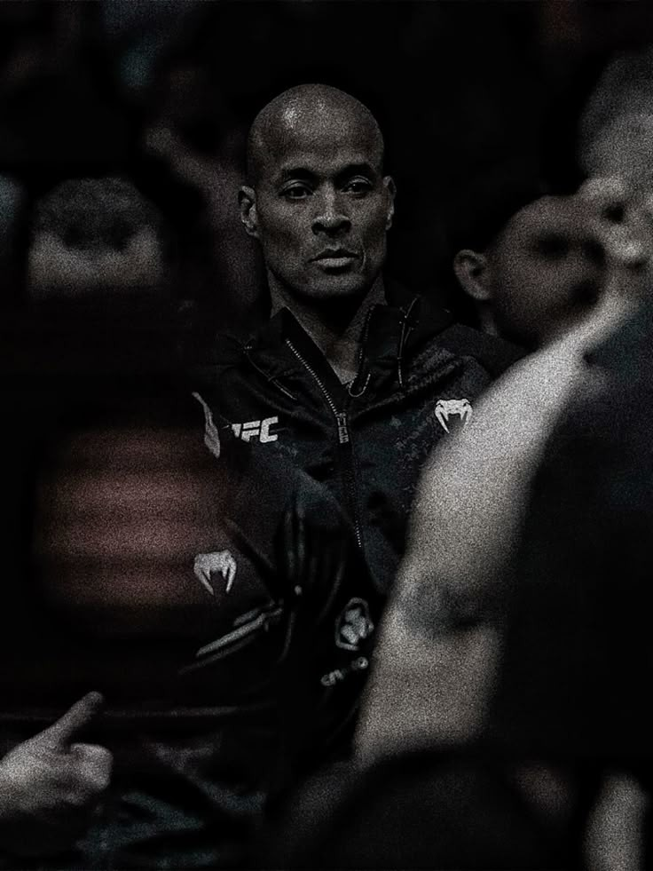

¿Quién es David Goggins?
David Goggins es un ex Navy SEAL, ultramaratonista, triatleta, orador motivacional y autor. Su vida es un testimonio de superación personal: de crecer con traumas, sobrepeso y dificultades, a convertirse en uno de los atletas de resistencia más duros del planeta.
El Camino del Dolor a la Disciplina
Goggins enfrentó una infancia marcada por la pobreza, el racismo y la violencia. Años más tarde, con sobrepeso y atrapado en un trabajo sin futuro, decidió cambiar su destino. A través de la disciplina extrema, la mentalidad de no rendirse y entrenamientos brutales, se transformó en un verdadero símbolo de resiliencia.